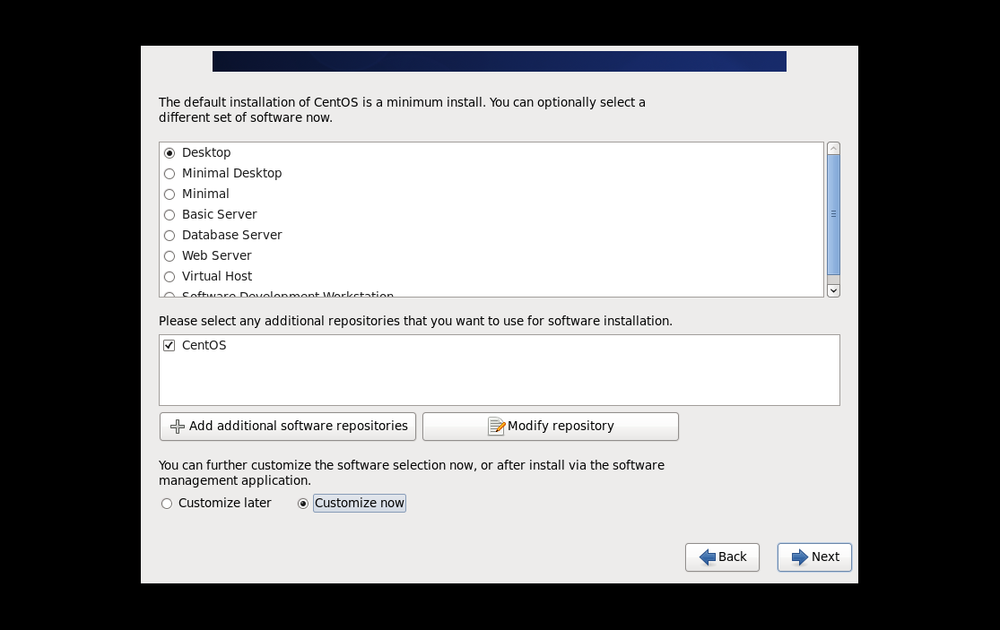

一、安装虚拟化软件：
VMware Workstation是该公司出品的“虚拟 PC”软件（即：大家常说的“虚拟机”），通过它可在一台电脑上同时运行更多的Microsoft Windows、Linux、Mac OS X、DOS系统。此处我们以VMware14.1.1版本为例：
1.打开VMware软件后，选择创建新的虚拟机：
2.在类型配置选项选择典型配置，并点击下一步：
3.安装客户机操作系统选项选择稍后安装操作系统：
4.此处我们以安装CentOS6.9版本为例，选择Linux系统，版本选择CentOS6 64位：
5.下一步填写虚拟机名称和虚拟机想要放置的文件路径：
6.最大磁盘大小我们以200GB为例，虚拟磁盘选择存储为单个文件：
7.虚拟机配置完成后，我们可以进行配置修改，并将镜像ISO文件链接至虚拟机的CD/DVD下：
二、安装CentOS 6系统：
1.选择第一项：安装或升级系统（Install or upgrade an existing system）：
2.此处我们选择跳过（Skip），选择OK则进行检查IOS镜像是否完好：
3.选择适合自己的语言及键盘使用模式，我们以英文界面安装为例，选择English：
4.选择存储介质的类别,此处我们选择 Basic Storage Devices，如果安装到网络存储介质如SANS上，选择 Specialized Storage Devices：
5.提示新硬盘或硬盘上的数据是否已不再需要，选择Yes，discard any data：
6.输入主机名(hostname),在此界面也可选择Configure Network进行网络配置：

7.时区选择：我们以北京时间为例，在地图上选择中国上海，并将System clock uses UTC，否则将与格林尼治时间相同步。

8.输入管理员账户root的密码并重复输入确认：

9.分区管理我们选择Create Custom Layout,进行自定义分区：
10.点击Create进行分区创建，选择标准分区（Standard Partition），我们将sda1分区挂载至/boot目录，sda2分区挂载至“/”根目录,也可创建自己的个性化分区，如将sda3挂载至/data分区：
11.创建swap分区：swap分区功能类似于Windows系统下的虚拟内存功能，我们选择分区类型swap，分区大小一般设置为内存的2倍左右：
12.如图，我们已经将主要分区创建完成，点击NEXT，出现硬盘将被格式化提示，选择Format：
13.此处可添加启动菜单，无特别需要我们选择下一步：
14.进行服务器类型选择以及个性化初始软件安装，我们以Desktop（图形桌面）安装为例，选择Customize now可进行个性化初始软件安装：

15.点击NEXT，进入CentOS 6安装过程：
16.好啦，我们已经初步完成了CentOS 6.9版本的安装，进行简单的信息填写，就可以进入Linux的世界中了！